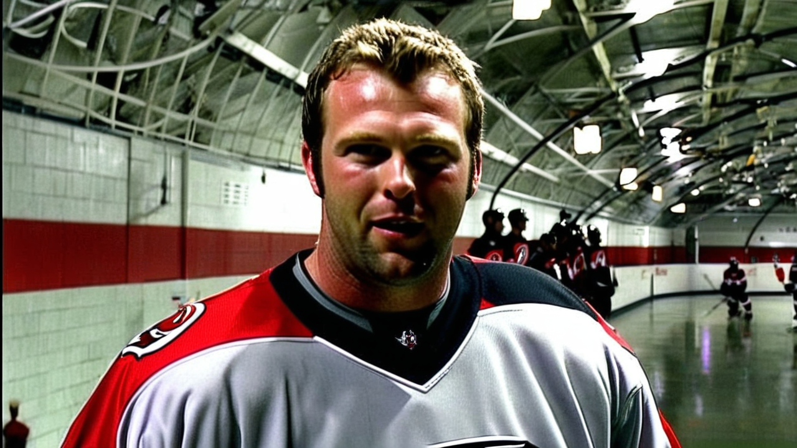

Brodeur: 'We have to be better, that's it' after third-period slip
The Devils' goaltender on the game getting away in the third against San Jose, a screened winner he would want back, and a 16-6 start he refuses to let slide.
 Marcus BellRinkside reporter · The Tunnel
Marcus BellRinkside reporter · The Tunnel
1:25 · synthetic voices, produced from the record · download
 Martin Brodeur93 and the
Martin Brodeur93 and the  New Jersey Devils fell 3-4 at home to San Jose on 2004-12-10, the third straight loss for a club that sits 9-2 on the road. Brodeur, 16 wins and 6 losses in 22 games this season, gave up the deciding goal through a screen in the third and did not dress the blame up afterward.
New Jersey Devils fell 3-4 at home to San Jose on 2004-12-10, the third straight loss for a club that sits 9-2 on the road. Brodeur, 16 wins and 6 losses in 22 games this season, gave up the deciding goal through a screen in the third and did not dress the blame up afterward.
Transcript
Marcus Bell here with Martin Brodeur. You were in that game well into the third, and San Jose walks out with both points. What happened in that last period?
Yeah, we were in it, for sure. We were matching, we were matching their pace for two periods, and then the third, they push, and we don't manage it. They get the one that, that matters, and then we get stretched. We have to defend the middle better, that's it.
The winning one, that fourth goal. Was there anything you'd want back on it?
It went through a screen. I saw it late. You want that one. I have to find it. It came at the end of my shift and I was tired, but that's, that's no excuse. It's a shot I stop most nights.
You kept it to a one-goal game on a couple of looks earlier. Is there a stop from tonight you hold onto despite the result?
Yeah, the two-on-one, I got across on it. I remember that one. But that's my job, you know. The guys in front worked. Friesen had two points, Scott too. We needed one more, that's all. We just, we need one more.
Three straight now. How does a start like this one, sixteen and six, sit when you hit a slide at home?
It sits. Nobody, nobody is panicking, but it sits. We played good, and now we give, we give these three back. I don't like to lose at home. We have to be better, that's it. Teams push, and we have to push back.
What's the message to the room after this one, before you break for practice?
We don't talk much after a loss. We look, we'll look at the video Monday and we know. We, uh we get back to work. You don't fix December in one night. You fix it in practice. That's all, you know.
Martin, thanks for the time. We'll let you get to the bus.
Merci. Thanks, Marcus.